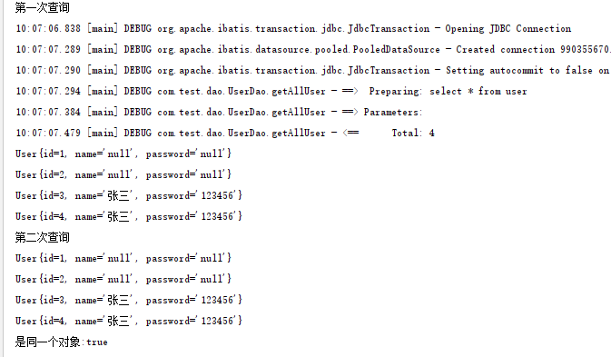

mybatis分一级缓存和二级缓存，如下图，是mybatis一级缓存和二级缓存的区别图解：
一级缓存
Mybatis的一级缓存是默认开启的，作用域是同一个SqlSession，当参数和SQL完全相同的情况下，使用同一个SqlSession对象调用同一个Mapper方法，当第1次执行SQL语句后，MyBatis会自动将其放在缓存中，后续再次查询时，如果没有声明需要刷新，且缓存没有超时，会直接取出此前缓存的数据，而不会再次发送SQL到数据库。从而提高查询效率。当 Session flush 或 close 之后，该Session中的所有 Cache 就将清空。
这里使用同一个sqlSession对象去查询两次，并且比较查询出来的对象是否是同一个，即比较内存地址。
1 | public static void main(String[] args) throws Exception{ |
从下图可以看出，第一次查询打印了sql,说明第一次查询去数据库中查出来了数据，第二次查询没有去数据库中查询数据，而是直接从缓存中获取。并且两次查询的结果是同一个对象。

二级缓存
Mybatis二级缓存的作用域是同一个Mapper，二级缓存开启后，同一个namespace下的所有操作语句，都影响着同一个Cache，即二级缓存被多个SqlSession共享，是一个全局的变量。所以二级存储也称之为namespace缓存！二级缓存需要进行配置开启。
ps：MyBatis默认实现的一二级缓存是使用HashMap存储的。只有当sqlSession关闭之后，该sqlSession的查询结果才会存入二级缓存中。
二级缓存的使用
1.修改配置文件mybatis-config.xml加入<setting name=”cacheEnabled”value=”true”/>，由于默认是true，所以不添加也可以。
2.在mapper.xml中开启二缓存，mapper.xml下的sql执行完成会存储到它的缓存区,如：
3.对应的pojo实现序列化(implements Serializable)。
这里使用两个不同的sqlSession去获取mapper对象，调用同一个查询方法：
1 | public static void main(String[] args) { |
但是发现第二次查询还是去查询的数据库，并没有走缓存，因为第一个sqlSession1并没有关闭，查询结果并不会被序列化并保存到二级缓存，这里其实先去查询了二级缓存
Cache Hit Ratio [com.test.dao.UserDao]: 0.0），表示命中次数与查询次数的比值。
关闭sqlSession1，sqlSession1.close()，继续查看日志，可以看到第二次查询命中了二级缓存，命中一次/查询两次=0.5。

但是我们可以发现两次查询出来的对象不是同一个，难道不是查的缓存吗，其实是cache中的readOnly属性在启作用：
readOnly 为只读属性， 默认为 false
false: 可读写， 在创建对象时， 会通过反序列化得到缓存对象的拷贝。 因此在速度上会相对慢一点， 但重在安全。
true: 只读， 只读的缓存会给所有调用者返回缓存对象的相同实例。 因此性能很好， 但如果修改了对象， 有可能会导致程序出问题。
总结
1.在开启二级缓存的情况下：
在同一个Mapper二级缓存里面，执行多次sql语句的情况是：首先查找二级缓存里面是否有数据，如果没有就找一级缓存，再没有，才会查找数据库。
2.在二级缓存没有开启的情况下：
查找数据的顺序是：查看一级缓存里面是否能够找到，找不到就在数据库里面找！！
3.当为select语句时：
flushCache默认为false，表示任何时候语句被调用，都不会去清空本地缓存和二级缓存。
useCache默认为true，表示会将本条语句的结果进行二级缓存。
4.当为insert、update、delete语句时：
flushCache默认为true，表示任何时候语句被调用，都会导致本地缓存和二级缓存被清空。
注意事项
由于在更新时会刷新缓存， 因此需要注意使用场合：查询频率很高， 更新频率很低时使用， 即经常使用 select, 相对较少使用delete, insert, update。
缓存是以 namespace 为单位的，不同 namespace 下的操作互不影响。但刷新缓存是刷新整个 namespace 的缓存， 也就是你 update 了一个， 则整个缓存都刷新了。
一二级缓存都可能会导致脏读（缓存不一样），二级缓存中，最好在 「只有单表操作」 的表的 namespace 使用缓存， 而且对该表的操作都在这个 namespace 中。 否则可能会出现数据不一致的情况（脏读）。